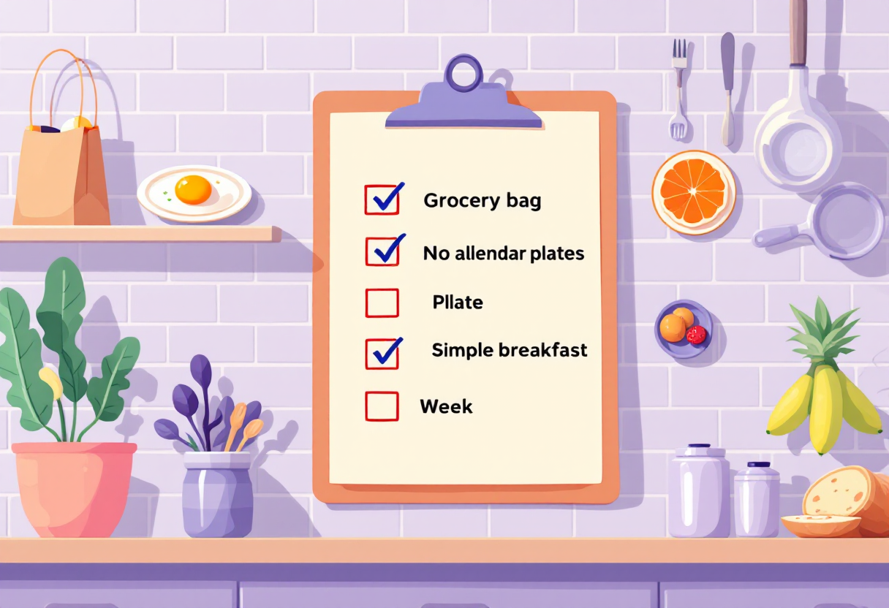

Сніданок без зайвого клопоту
Як організувати ранкове харчування, якщо живеш самостійно

Склади власний набір продуктів
Коли починаєш жити окремо, сніданок часто стає першою звичкою, яку відкладають через брак часу. У результаті доводиться перекушувати на ходу або витрачати більше грошей на кав'ярні та доставку.
Не потрібно щоразу шукати нові рецепти. Достатньо мати вдома продукти, з яких можна швидко зібрати сніданок.
Наприклад:
- яйця;
- хліб або тости;
- сир чи йогурт;
- вівсяні пластівці;
- сезонні фрукти;
- горіхи;
- овочі для сендвічів або омлетів.
Такий набір дозволяє комбінувати різні варіанти без додаткових витрат.

Варіанти на кожен день
Якщо часу мало:
- тост із сиром;
- йогурт із фруктами;
- банан і жменя горіхів;
- кисломолочний сир.
Якщо є 10–15 хвилин:
- омлет або яєчня;
- вівсянка з фруктами;
- гарячий сендвіч;
- сирники або млинці з напівфабрикатів.
Не обов'язково готувати різні страви щодня – прості повторювані варіанти значно спрощують побут.

Як заощадити час і гроші
- Плануй покупки хоча б на кілька днів уперед.
- Тримай вдома продукти тривалого зберігання.
- Не купуй більше, ніж встигаєш використати.
- Готуй прості страви з доступних інгредієнтів.
- Не ходи в магазин щоранку за дрібними покупками.

Якщо зовсім немає часу
Іноді нормальний сніданок – це не ідеальна страва, а будь-яка їжа, яка допоможе не залишатися голодним до обіду.
У такі дні краще швидко з'їсти йогурт, фрукт або сендвіч, ніж повністю пропустити прийом їжі.

Короткий чеклист
- ✓ Тримай вдома базові продукти
- ✓ Плануй покупки заздалегідь
- ✓ Обирай прості страви
- ✓ Не купуй зайвого
- ✓ Знайди 2-3 сніданки, які легко готувати регулярно